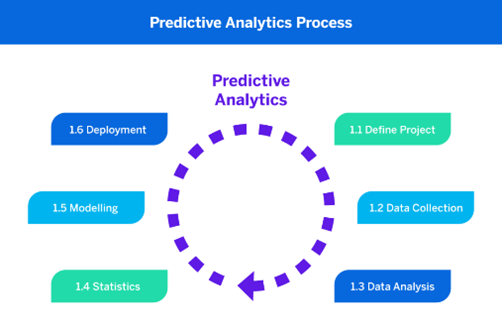

AI and information systems in business
By processing and analysing data using sophisticated algorithms and computing power, artificial intelligence (AI) has completely changed the way businesses operate. This has resulted in improved decision-making and cutting-edge applications. Information systems must incorporate AI for a number of reasons.
Data analysis and predictive insights
Data analysis and predictive insights: Artificial intelligence (AI) systems are able to process large amounts of data quickly, giving organisations insightful information about consumer behaviour, industry trends, and operational effectiveness. AI-powered predictive analytics enables the forecasting of future patterns and possible hazards from past data, enabling businesses to make well-informed decisions.
Improved Customer Experience
Improved Customer Experience: Artificial intelligence (AI)-powered technologies, such sentiment analysis, chatbots, and recommendation engines, greatly enhance the user experience. Increased customer happiness and loyalty are the results of recommendation engines' customised ideas, chatbots' prompt and individualised assistance, and sentiment analysis's ability to comprehend and resolve client sentiments.
Automation and Process Optimisation
Automation and Process Optimisation: By streamlining repetitive operations, AI can minimise errors and human intervention. Processes can be optimised by machine learning algorithms, which increase operational effectiveness and save costs. AI can effectively handle tasks like data input, document processing, and even predictive maintenance in the manufacturing industry, freeing up employees to concentrate on more strategically important and value-adding work.
Businesses may leverage data, automate procedures, and provide individualised experiences by integrating AI into information systems, which eventually improves operational effectiveness and decision-making.